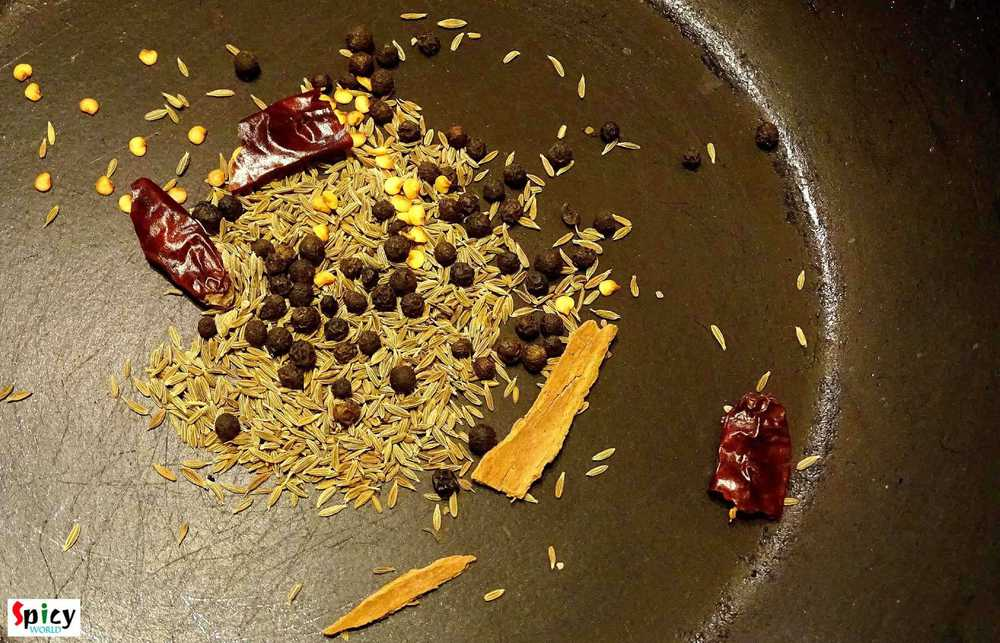
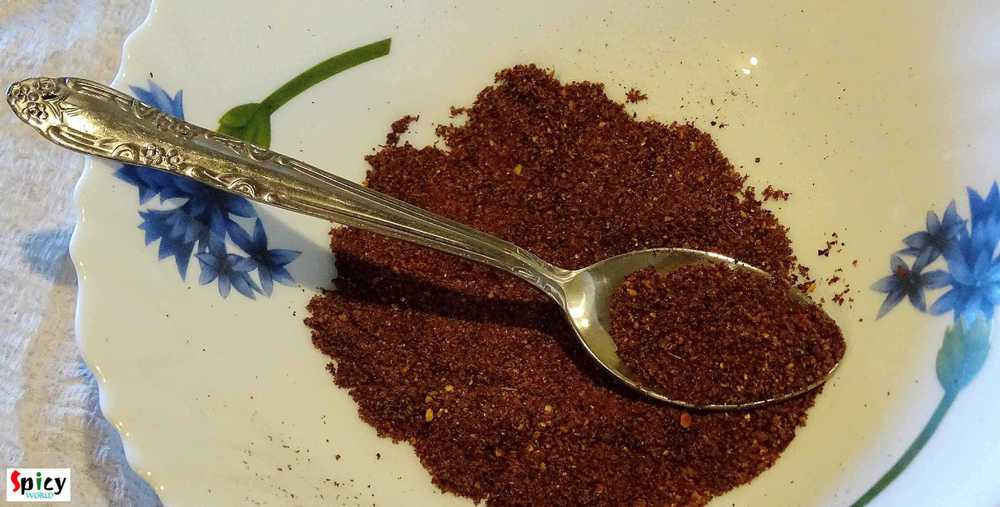
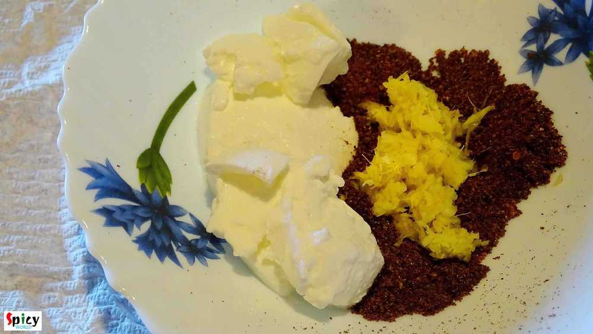
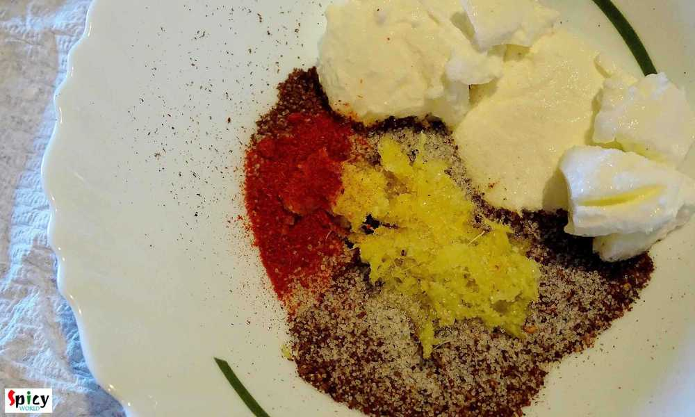
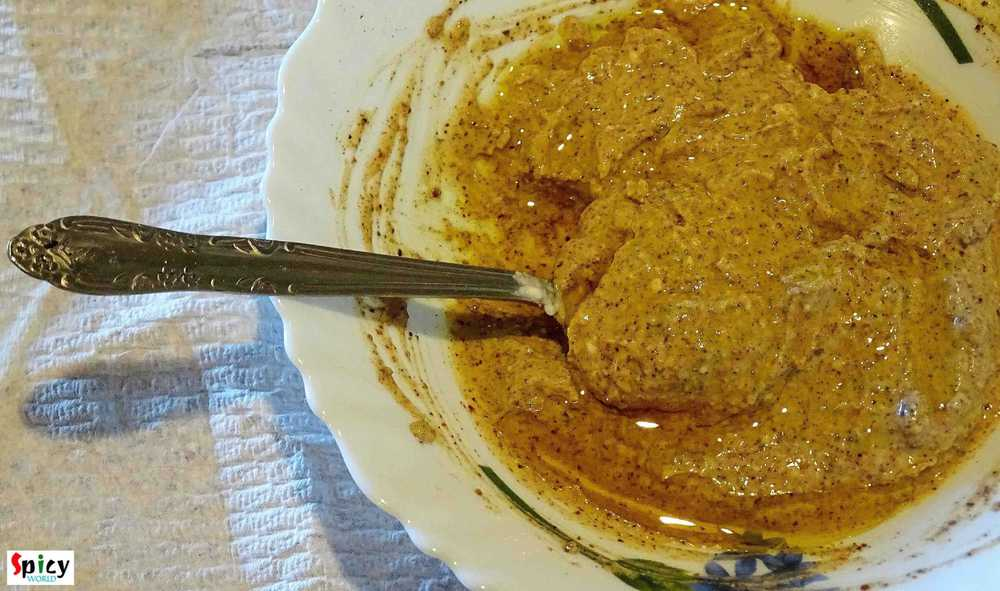
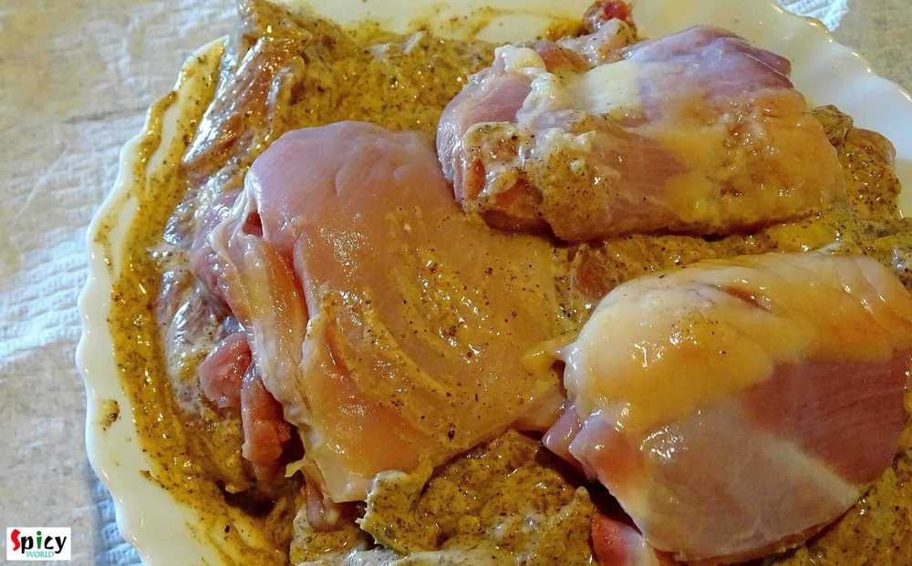
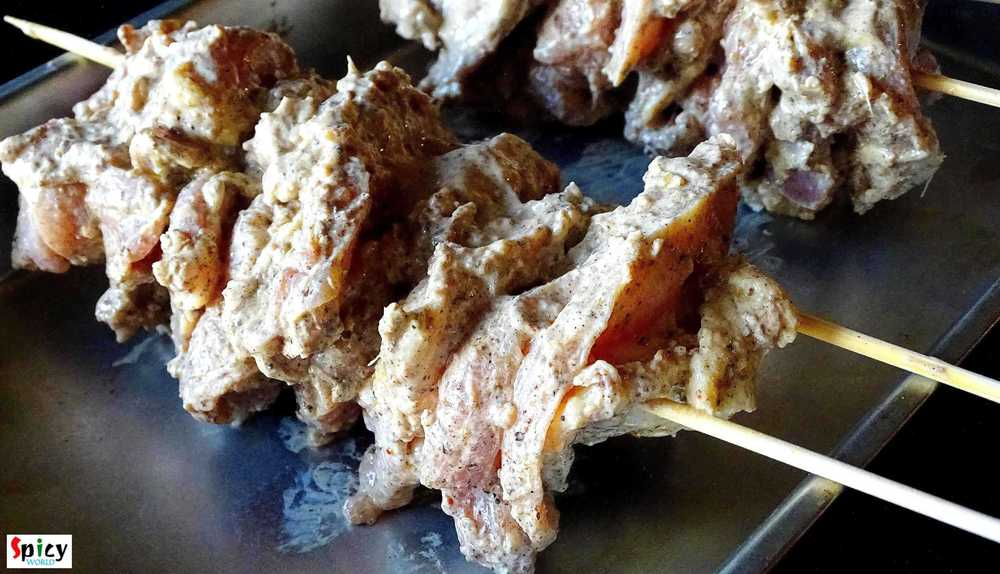
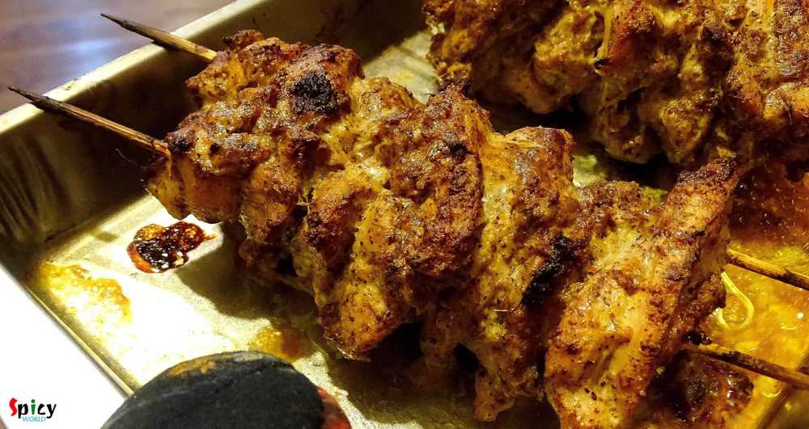
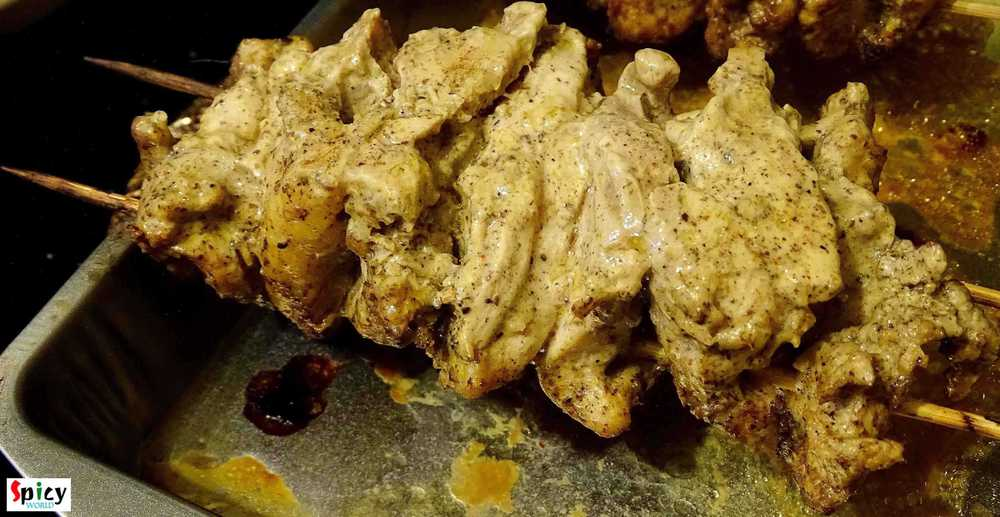
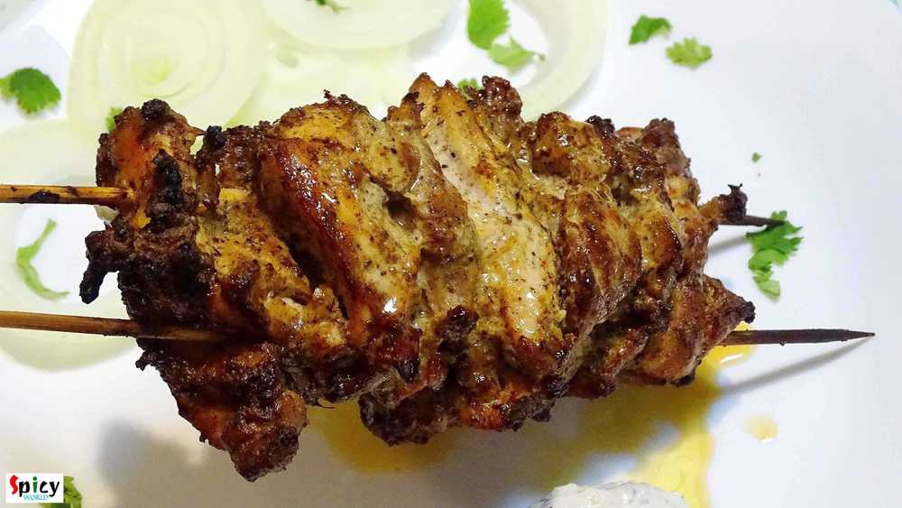

Simple and Easy Recipes
Sish Kebab / Turkish Kabab
© 2016 Spicy World, Published on: Jan 27, 2016
I have tried some middle eastern platters in couple of restaurants at Austin. I have fallen in love with their kebabs. Once you tasted it, you will never forget that unique taste. I also love their shawarma chicken. So, I reasearched how to make those kebabs at home and the easiest one is this 'turkish kebab'. I also mentioned it as 'sish kebab' because in several places I found the same recipe but with this name. Serve them always with mint sauce or tzatziki sauce. After making them, don't get confuse by their names, just enjoy the awesome taste of juicy, succulent kebabs.

Ingredients
- 15 to 20 boneless big chunck size chicken pieces.
- Whole spices (2 sticks of cinnamon, 2 Teaspoons of cumin seeds, 1 Teaspoon of black pepper corns, 1 dry red chilli).
- 3 Tablespoons of thick, hung yogurt.
- Salt.
- 1 Teaspoon of ginger and garlic paste.
- 1 Teaspoon of red chilli powder.
- 2 Teaspoons of lemon juice.
- 1 Tablespoon of oil.
- 4 bamboo skewers.

Steps
Roast all the whole spices for 2-3 minutes in a dry pan.
Let them cool down and then grind them to a fine powder.
Take a mixing bowl. Add that roasted powder, yogurt, ginger and garlic paste.
Then add salt and red chilli powder to it. Mix everything well with a spoon.
Add lemon juice and oil in the mixture. Mix it.
Now add the boneless chicken pieces to the marination.
Massage the chicken pieces very well with the marination and keep it fridge for 3 to 4 hours.
Soak the bamboo skewers in water for 10-15 minutes before making kebabs.
Now take 1 chicken piece and secure it in 2 skewers.
Do the same with rest of them.
Preheat the oven in the highest temperature for 10 minutes.
Then place these skewers in the oven for 20 minutes for 1 side.
Then turn them to the other side and again bake them for 15 minutes in highest temperature.
Let them rest for another 5 minutes, then sprinkle some chaat masala and serve.
Your turkish kebab is ready ...
Enjoy these hot with some onion rings and tzatziki sauce ...
")